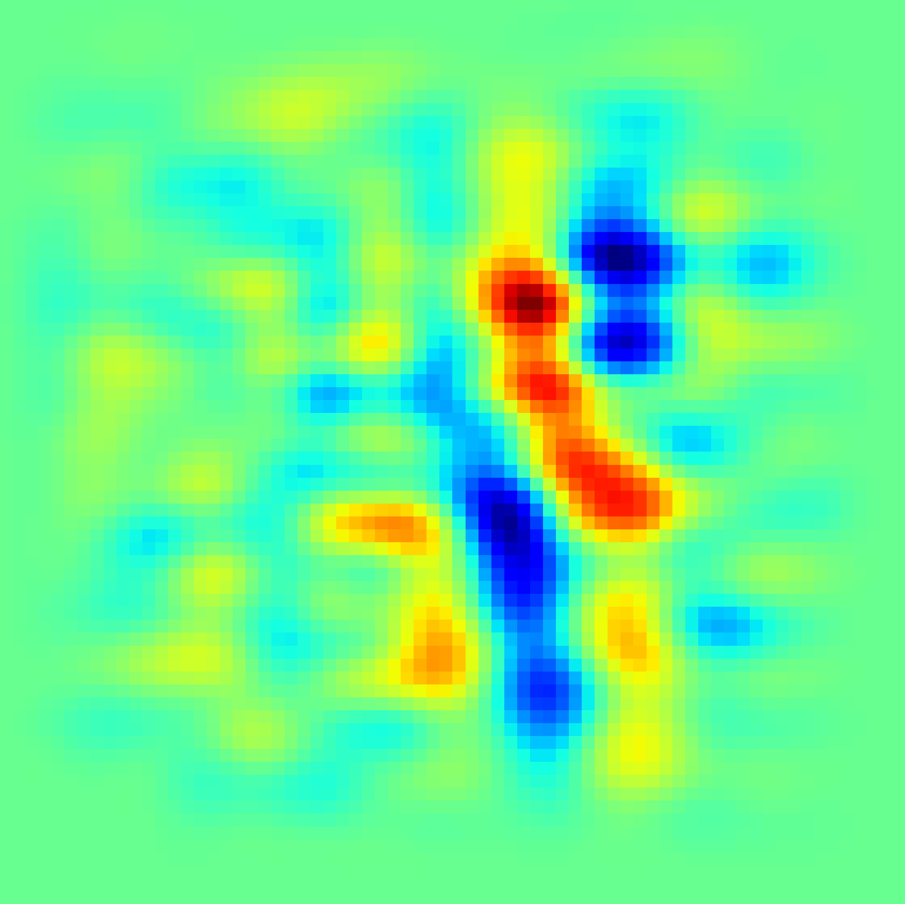
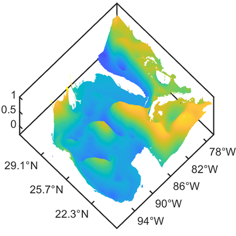
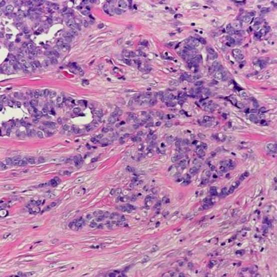

Justin L. Wang
A passionate student of Computer Science and Mathematics

Designed a hierarchical sparse coding model, inspired by the sparse activity of neurons in the sensory system, to learn features in speech signals.

Using machine learning to get a better understanding of the GoM LCS and its eddy shedding process as well as construct models that are able to forecast future oceanographic features contained in the system better.

Study of automated medical imaging with the use of Convolutional Neural Networks. Studies were conducted on automatic detection of IDC breast cancer from whole slide images, as well as white blood cells. Methods were applied such as ANN ensemble methods along with data augmentation.